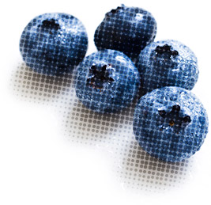

Vanuit onze passie voor een gezonde en natuurvriendelijke leefstijl, is de droom ontstaan om een duurzaam, 100% plantaardig eetcafé met winkel te openen. In 2014 zijn wij gestart als Raw Food café maar hebben inmiddels ook een volledige warme kaart om een breed publiek te kunnen laten ervaren hoe compleet en lekker plantaardig eten is. Van vegan junkfood tot supergezonde Living Foods.
Bij Crudo kunt u terecht voor een fair kopje Moyee koffie of thee met een “guilt free” stuk taart, vers geperste juices en smoothies en een heerlijke lunch of diner. Alle huisgemaakte gerechten zijn 100% plantaardig, maar ook biologisch, glutenvrij, lactosevrij en suikervrij. Neem ook gerust je laptop mee en maak gebruik van het open Wi-Fi-netwerk.
Bij Crudo kunt u terecht voor een fair kopje Moyee koffie of thee met een “guilt free” stuk taart, vers geperste juices en smoothies en een heerlijke lunch of diner. Alle huisgemaakte gerechten zijn 100% plantaardig, maar ook biologisch, glutenvrij, lactosevrij en suikervrij. Neem ook gerust je laptop mee en maak gebruik van het open Wi-Fi-netwerk.
Bekijk het menuIn onze winkel vind je alles wat je nodig hebt voor het bereiden van lekker plantaardig eten thuis. De lekkere en gezonde alternatieven voor dierlijke producten waar je in ons eetcafé van geniet zijn te verkrijgen in de winkel.
We hebben een gedeelte met biologische en fair zero-waste producten die je tapt uit silo’s. De verpakking neem je zelf mee. Op deze manier houden we de belasting op het ecosysteem zo laag mogelijk.
Uit eigen ervaring weten wij dat tarwegras de nummer één op het gebied van gezonde voeding is. We verkopen diverse tarwegras producten, van één vers geperst shot tot een abonnement voor dagelijks vers tarwegras. In de winkel vind je tevens de meest essentiële voedingssupplementen.